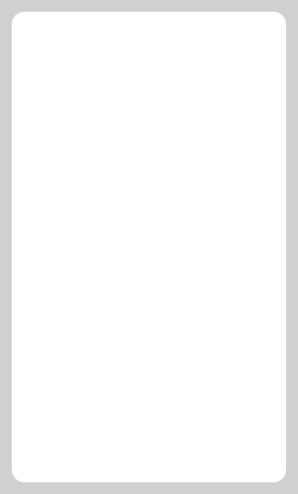

STAT REFERENCE
tough
Physical and mental resolve. Used to power through or overwhelm what's in your way.
calm
Grace under pressure and peace of mind. Used to keep your wits about you.
hasty
Speed, reaction, and impulsiveness. Used to get there first, even when you shouldn't.
bright
Learning, reason, and deduction. Used to figure things out or make connections.
sly
Deviousness and unpredictability. Used to surprise others or thwart expectations.
health
Well-being. When your harm exeeds health, collapse; lower stats to -1 until you find help.
REFERENCE
